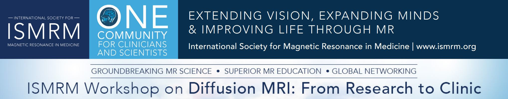

Honored to receive a Summa Cum Laude Merit Award for my presentation at ISMRM 2025 on protocol optimization using Explainable AI! This achievement is the result of my research visit at the Martinos Center (MGH/Harvard Medical School), where I had the opportunity to work for over nine months (March to December 2024) in the lab of Drs. Berkin Bilgic, Susie Y. Huang, and Hong-Hsi Lee.

Honored to receive a Magna Cum Laude Merit Award for my presentation at ISMRM 2024!

Honored to receive a Summa Cum Laude Merit Award and 2nd Prize for Best Oral Presentation from the Diffusion Study Group at ISMRM 2023.
Check out Aunt Minnie Europe's article featuring my work on diffusion MRI and neurological disorders.

I was thrilled to present one of my abstracts in the Proffered Oral session. It was an intense, productive, and inspiring experience with many new research ideas.

My first PhD conference — an incredible experience with thousands of MRI researchers. The post-conference meeting at UCL was especially valuable for connecting with diffusion MRI and ML specialists.